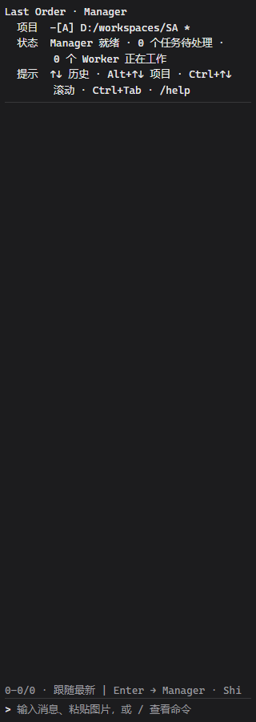
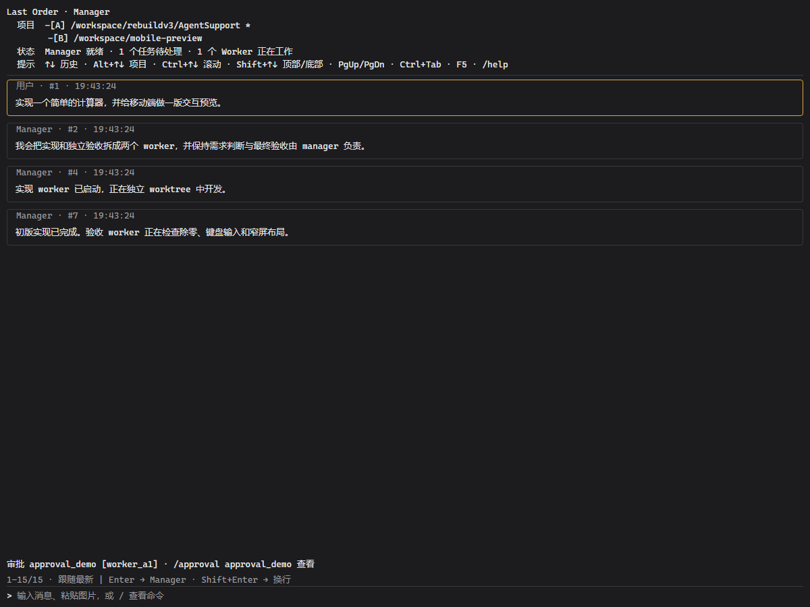
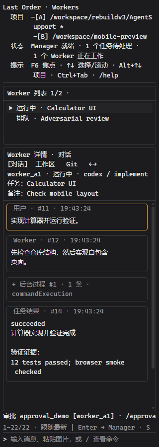
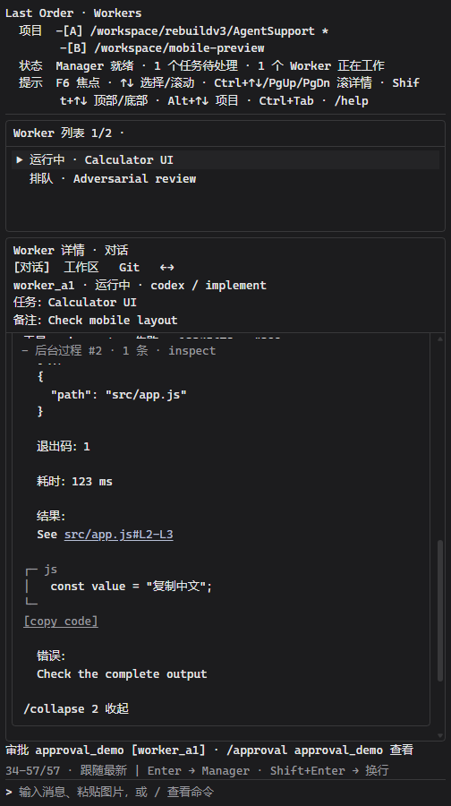
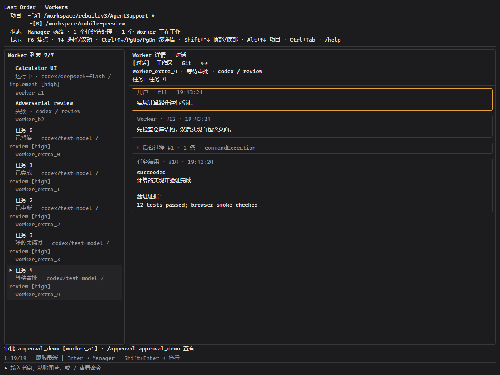
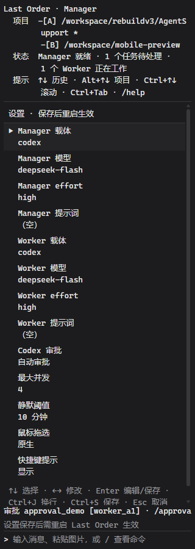
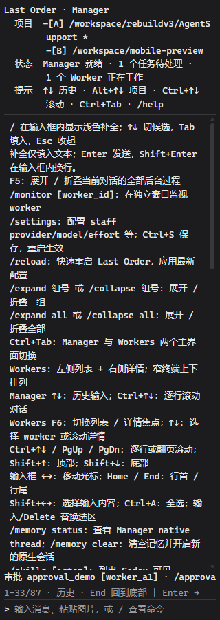

旧样板的标签按钮、欢迎标题、任务卡片和输入工具栏已撤下。下方直接加载产品代码，标题、项目、状态、提示使用原 TUI 的同一组规则。窄栏按原规则换行，项目显示完整路径。
点击预览内输入区：Ctrl+Tab 切换，F1–F6、/ 命令、↑↓ 历史、Shift+Enter 换行。普通输入发给 Manager。数据为本地演示。
验证：57 个状态的内容对照与键盘检查通过。以下是相同数据下的原 TUI 文本和浏览器截图。真实 VS Code 宿主尚未验收：隔离开发宿主启动被 vscode-updating 更新锁阻止。
Last Order · Manager
项目 -[A] D:/workspaces/SA *
状态 Manager 就绪 · 0 个任务待处理 ·
0 个 Worker 正在工作
提示 ↑↓ 历史 · Alt+↑↓ 项目 · Ctrl+↑↓
滚动 · Ctrl+Tab · /help
────────────────────────────────────────
0–0/0 · 跟随最新 | Enter → Manager · Shi
────────────────────────────────────────
> 输入消息，或 / 查看命令 
Last Order · Manager
项目 -[A] /workspace/rebuildv3/AgentSupport *
-[B] /workspace/mobile-preview
状态 Manager 就绪 · 1 个任务待处理 · 1 个 Worker 正在工作
提示 ↑↓ 历史 · Alt+↑↓ 项目 · Ctrl+↑↓ 滚动 · Shift+↑↓ 顶部/底部 · PgUp/PgDn · Ctrl+Tab · F5 · /help
──────────────────────────────────────────────────────────────────────────────────────────────────────────────────────────────────────────────────────────
╭─ 用户 · #1 · 19:43:24──────────────────────────────────────────────────────────────────────────────────────────────────────────────────────────────────╮
│ 实现一个简单的计算器，并给移动端做一版交互预览。 │
╰────────────────────────────────────────────────────────────────────────────────────────────────────────────────────────────────────────────────────────╯
╭─ Manager · #2 · 19:43:24───────────────────────────────────────────────────────────────────────────────────────────────────────────────────────────────╮
│ 我会把实现和独立验收拆成两个 worker，并保持需求判断与最终验收由 manager 负责。 │
╰────────────────────────────────────────────────────────────────────────────────────────────────────────────────────────────────────────────────────────╯
╭─ Manager · #4 · 19:43:24───────────────────────────────────────────────────────────────────────────────────────────────────────────────────────────────╮
│ 实现 worker 已启动，正在独立 worktree 中开发。 │
╰────────────────────────────────────────────────────────────────────────────────────────────────────────────────────────────────────────────────────────╯
╭─ Manager · #7 · 19:43:24───────────────────────────────────────────────────────────────────────────────────────────────────────────────────────────────╮
│ 初版实现已完成。验收 worker 正在检查除零、键盘输入和窄屏布局。 │
╰────────────────────────────────────────────────────────────────────────────────────────────────────────────────────────────────────────────────────────╯
审批 approval_demo [worker_a1] · /approval approval_demo 查看
1–15/15 · 跟随最新 | Enter → Manager · Shift+Enter → 换行
──────────────────────────────────────────────────────────────────────────────────────────────────────────────────────────────────────────────────────────
> 输入消息，或 / 查看命令 
Last Order · Workers
项目 -[A] /workspace/rebuildv3/AgentS
upport *
-[B] /workspace/mobile-preview
状态 Manager 就绪 · 1 个任务待处理 ·
1 个 Worker 正在工作
提示 F6 焦点 · ↑↓ 选择/滚动 · Alt+↑↓
项目 · Ctrl+Tab · /help
────────────────────────────────────────
╭─ Worker 列表 1/2 ·───────────────────╮
│ ▶ 运行中 · Calculator UI │
│ 排队 · Adversarial review │
╰──────────────────────────────────────╯
────────────────────────────────────────
╭─ Worker 详情 · 对话──────────────────╮
│ [对话] 工作区 Git ←→ │
│ worker_a1 · 运行中 · codex / impleme │
│ 任务：Calculator UI │
│ 备注：Check mobile layout │
│ ╭─ 用户 · #11 · 19:43:24───────────╮ │
│ │ 实现计算器并运行验证。 │ │
│ ╰──────────────────────────────────╯ │
│ │
│ ╭─ Worker · #12 · 19:43:24─────────╮ │
│ │ 先检查仓库结构，然后实现自包含 │ │
│ │ 页面。 │ │
│ ╰──────────────────────────────────╯ │
│ │
│ ╭─ + 后台过程 #1 · 1 条 · commandEx╮ │
│ │ 已折叠 · /expand 1 展开 · F5 │ │
│ │ 展开全部 │ │
│ ╰──────────────────────────────────╯ │
│ │
│ ╭─ 任务结果 · #14 · 19:43:24───────╮ │
│ │ succeeded │ │
│ │ 计算器实现并验证完成 │ │
│ │ │ │
│ │ 验证证据： │ │
│ │ 12 tests passed; browser smoke │ │
│ │ checked │ │
│ ╰──────────────────────────────────╯ │
╰──────────────────────────────────────╯
审批 approval_demo [worker_a1] · /approv
1–22/22 · 跟随最新 | Enter → Manager · S
────────────────────────────────────────
> 输入消息，或 / 查看命令 
Last Order · Workers
项目 -[A] /workspace/rebuildv3/AgentSupport *
-[B] /workspace/mobile-preview
状态 Manager 就绪 · 1 个任务待处理 · 1 个 Worker 正在工作
提示 F6 焦点 · ↑↓ 选择/滚动 · Ctrl+↑↓/PgUp/PgDn 滚详情 · Shif
t+↑↓ 顶部/底部 · Alt+↑↓ 项目 · Ctrl+Tab · /help
────────────────────────────────────────────────────────────────
╭─ Worker 列表 1/2 ·───────────────────────────────────────────╮
│ ▶ 运行中 · Calculator UI │
│ 排队 · Adversarial review │
╰──────────────────────────────────────────────────────────────╯
────────────────────────────────────────────────────────────────
╭─ Worker 详情 · 对话──────────────────────────────────────────╮
│ [对话] 工作区 Git ←→ │
│ worker_a1 · 运行中 · codex / implement │
│ 任务：Calculator UI │
│ 备注：Check mobile layout │
│ ╭─ − 后台过程 #2 · 1 条 · inspect──────────────────────────╮ │
│ │ 工具 · inspect · 失败 · 12345678 · #200 │ │
│ │ 参数： │ │
│ │ { │ │
│ │ "path": "src/app.js" │ │
│ │ } │ │
│ │ │ │
│ │ 退出码：1 │ │
│ │ │ │
│ │ 耗时：123 ms │ │
│ │ │ │
│ │ 结果： │ │
│ │ See src/app.js#L2-L3 │ │
│ │ │ │
│ │ ┌─ js │ │
│ │ │ const value = "复制中文"; │ │
│ │ └─ │ │
│ │ [copy code] │ │
│ │ │ │
│ │ 错误： │ │
│ │ Check the complete output │ │
│ │ │ │
│ │ /collapse 2 收起 │ │
│ ╰──────────────────────────────────────────────────────────╯ │
╰──────────────────────────────────────────────────────────────╯
审批 approval_demo [worker_a1] · /approval approval_demo 查看
34–57/57 · 跟随最新 | Enter → Manager · Shift+Enter → 换行
────────────────────────────────────────────────────────────────
> 输入消息，或 / 查看命令 
Last Order · Workers
项目 -[A] /workspace/rebuildv3/AgentSupport *
-[B] /workspace/mobile-preview
状态 Manager 就绪 · 1 个任务待处理 · 1 个 Worker 正在工作
提示 F6 焦点 · ↑↓ 选择/滚动 · Ctrl+↑↓/PgUp/PgDn 滚详情 · Shift+↑↓ 顶部/底部 · Alt+↑↓ 项目 · Ctrl+Tab · /help
──────────────────────────────────────────────────────────────────────────────────────────────────────────────────────────────────────────────────────────
╭─ Worker 列表 7/7 ·─────────────────╮ │ ╭─ Worker 详情 · 对话───────────────────────────────────────────────────────────────────────────────────────────╮
│ Calculator UI │ │ │ [对话] 工作区 Git ←→ │
│ 运行中 · codex/deepseek-flash / │ │ │ worker_extra_4 · 等待审批 · codex / review │
│ worker_a1 │ │ │ 任务：任务 4 │
│ Adversarial review │ │ │ ╭─ 用户 · #11 · 19:43:24────────────────────────────────────────────────────────────────────────────────────╮ │
│ 失败 · codex / review │ │ │ │ 实现计算器并运行验证。 │ │
│ worker_b2 │ │ │ ╰───────────────────────────────────────────────────────────────────────────────────────────────────────────╯ │
│ 任务 0 │ │ │ │
│ 已暂停 · codex/test-model / revi │ │ │ ╭─ Worker · #12 · 19:43:24──────────────────────────────────────────────────────────────────────────────────╮ │
│ worker_extra_0 │ │ │ │ 先检查仓库结构，然后实现自包含页面。 │ │
│ 任务 1 │ │ │ ╰───────────────────────────────────────────────────────────────────────────────────────────────────────────╯ │
│ 已完成 · codex/test-model / revi │ │ │ │
│ worker_extra_1 │ │ │ ╭─ + 后台过程 #1 · 1 条 · commandExecution──────────────────────────────────────────────────────────────────╮ │
│ 任务 2 │ │ │ │ 已折叠 · /expand 1 展开 · F5 展开全部 │ │
│ 已中断 · codex/test-model / revi │ │ │ ╰───────────────────────────────────────────────────────────────────────────────────────────────────────────╯ │
│ worker_extra_2 │ │ │ │
│ 任务 3 │ │ │ ╭─ 任务结果 · #14 · 19:43:24────────────────────────────────────────────────────────────────────────────────╮ │
│ 验收未通过 · codex/test-model / │ │ │ │ succeeded │ │
│ worker_extra_3 │ │ │ │ 计算器实现并验证完成 │ │
│ ▶ 任务 4 │ │ │ │ │ │
│ 等待审批 · codex/test-model / re │ │ │ │ 验证证据： │ │
│ worker_extra_4 │ │ │ │ 12 tests passed; browser smoke checked │ │
│ │ │ │ ╰───────────────────────────────────────────────────────────────────────────────────────────────────────────╯ │
│ │ │ │ │
│ │ │ │ │
│ │ │ │ │
│ │ │ │ │
│ │ │ │ │
│ │ │ │ │
│ │ │ │ │
│ │ │ │ │
│ │ │ │ │
│ │ │ │ │
│ │ │ │ │
│ │ │ │ │
╰────────────────────────────────────╯ │ ╰───────────────────────────────────────────────────────────────────────────────────────────────────────────────╯
审批 approval_demo [worker_a1] · /approval approval_demo 查看
1–19/19 · 跟随最新 | Enter → Manager · Shift+Enter → 换行
──────────────────────────────────────────────────────────────────────────────────────────────────────────────────────────────────────────────────────────
> 输入消息，或 / 查看命令 
Last Order · Manager
项目 -[A] /workspace/rebuildv3/AgentS
upport *
-[B] /workspace/mobile-preview
状态 Manager 就绪 · 1 个任务待处理 ·
1 个 Worker 正在工作
提示 ↑↓ 历史 · Alt+↑↓ 项目 · Ctrl+↑↓
滚动 · Ctrl+Tab · /help
────────────────────────────────────────
╭─ 设置 · 保存后重启生效───────────────╮
│ ▶ Manager 载体 codex │
│ Manager 模型 deepseek-flash │
│ Manager effort high │
│ Manager 提示词 （空） │
│ Worker 载体 codex │
│ Worker 模型 deepseek-flash │
│ Worker effort high │
│ Worker 提示词 （空） │
│ Codex 审批 自动审批 │
│ 最大并发 4 │
│ 静默阈值 10 分钟 │
│ 鼠标拖选 原生 │
│ 快捷键提示 显示 │
│ │
│ ↑↓ 选择 · ←→ 修改 · Enter 编辑/保存 │
│ │
│ │
│ │
│ │
│ │
│ │
│ │
│ │
│ │
│ │
│ │
│ │
│ │
│ │
│ │
│ │
╰──────────────────────────────────────╯
审批 approval_demo [worker_a1] · /approv
设置保存后需重启 Last Order 生效
────────────────────────────────────────
> 输入消息，或 / 查看命令 
Last Order · Manager
项目 -[A] /workspace/rebuildv3/AgentS
upport *
-[B] /workspace/mobile-preview
状态 Manager 就绪 · 1 个任务待处理 ·
1 个 Worker 正在工作
提示 ↑↓ 历史 · Alt+↑↓ 项目 · Ctrl+↑↓
滚动 · Ctrl+Tab · /help
────────────────────────────────────────
/ 在输入框内显示浅色补全；↑↓ 切候选，Tab
填入，Esc 收起
补全仅填入文本；Enter 发送，Shift+Enter
在输入框内换行。
F5: 展开 / 折叠当前对话的全部后台过程
/monitor [worker_id]: 在独立窗口监视 wor
ker
/settings: 配置 staff provider/model/eff
ort 等；Ctrl+S 保存，重启生效
/reload: 快速重启 Last Order，应用最新配
置
/expand 组号 或 /collapse 组号: 展开 /
折叠一组
/expand all 或 /collapse all: 展开 / 折
叠全部
Ctrl+Tab: Manager 与 Workers 两个主界面
切换
Workers: 左侧列表 + 右侧详情；窄终端上下
排列
Manager ↑↓: 历史输入；Ctrl+↑↓: 逐行滚动
对话
Workers F6: 切换列表 / 详情焦点；↑↓: 选
择 worker 或滚动详情
Ctrl+↑↓ / PgUp / PgDn: 逐行或翻页滚动；S
hift+↑: 顶部；Shift+↓: 底部
输入框 ←→: 移动光标；Home / End: 行首 /
行尾
Shift+←→: 选择输入内容；Ctrl+A: 全选；输
入/Delete 替换选区
/memory status: 查看 Manager native thre
ad；/memory clear: 清空记忆并开启新的原
生会话
/skills [actor]: 列出 Codex 可见 skills
审批 approval_demo [worker_a1] · /approv
1–33/87 · 历史 · End 回到底部 | Enter →
────────────────────────────────────────
> 输入消息，或 / 查看命令 